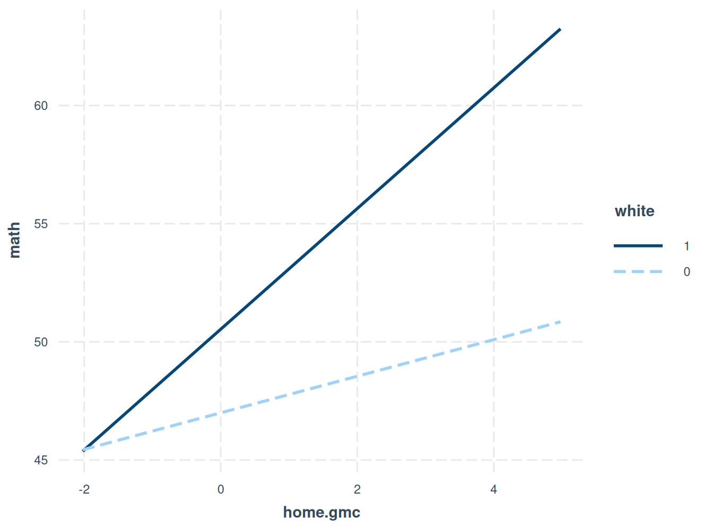
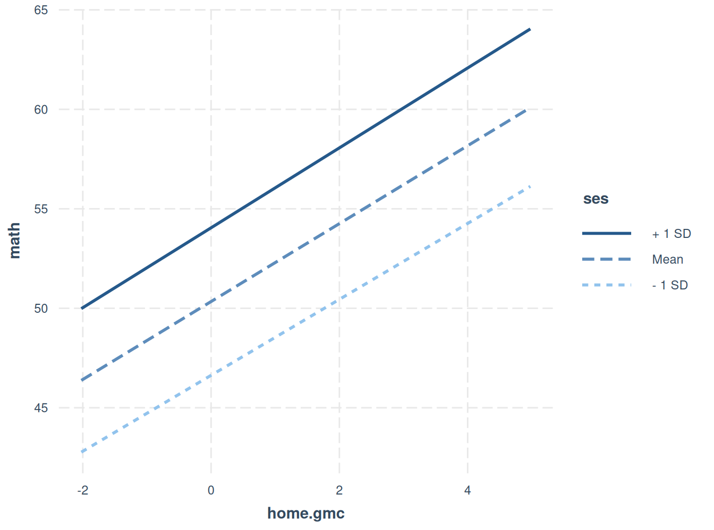

En este práctico, abordaremos algunos conceptos adicionales en los modelos multinivel:
La importancia del centrado de variables
Distinguir los efectos dentro de los grupos de los efectos entre grupos
Al final, la agrupación (clustering) nos acerca a comprender qué nos dicen las interacciones entre niveles
Modelos contextuales: un punto de partida
Los modelos contextuales utilizan el predictor tanto en el nivel 1 (L1) como en el nivel 2 (L2).
Este tipo de modelos se usa para evaluar efectos “contextuales”:
En general, un efecto contextual compara el efecto de un predictor medido a nivel individual sobre un resultado individual con el efecto de la media del predictor sobre ese mismo resultado.
Consideremos el efecto de las tareas escolares: ¿el logro en matemáticas de un estudiante es una función de su propia cantidad de tareas o de cuánta tarea hace en promedio toda la clase?
El problema es que el puntaje de cada estudiante en una clase o grupo determinado se utiliza para calcular la media; es decir, ambos no son ortogonales (no son independientes entre sí).
Los modelos contextuales son útiles para evaluar los efectos del centrado.
Datos de ejemplo
Los datos provienen de Kreft y Leeuw, y pueden encontrarse en el sitio web de IDRE
El logro en matemáticas es la variable dependiente, y los estudiantes están anidados dentro de escuelas.
Las horas de tarea son el predictor de nivel 1 (L1)
psych::describe(school0[c("math","homework")], fast =TRUE)
vars n mean sd median min max range skew kurtosis se
math 1 260 51.30 11.14 49.5 31 71 40 0.11 -1.2 0.69
homework 2 260 2.02 1.55 1.0 0 7 7 0.82 -0.3 0.10
Centrado
En algunos casos, podríamos desear centrar nuestras variables predictoras/independientes.
Hemos hablado sobre problemas de interpretación (por ejemplo, cuando cero no es un valor plausible), pero existen otras razones.
Para centrar una variable, se resta un valor dado (usualmente una media) de los puntajes originales de la variable.
El centrado alterará el significado de ciertos parámetros, incluyendo el intercepto y algunas pendientes (dependiendo del método de centrado).
Dos métodos relevantes de centrado son:
Centrado en la media general / Centrado por una constante (GMC)
Centrado en la media del grupo (CMC)
Centrado en la Media General (GMC)
Quizás la forma más familiar de centrar los datos sería restar la media general a cada observación.
La media general es la media de cada variable X considerando todas las observaciones, sin importar la unidad de muestreo.
Nuestra ecuación de regresión para el modelo contextual que predice los puntajes en matemáticas según las horas de tarea se convierte en:
El intercepto ahora refleja el valor predicho de Y para un estudiante que (siguiendo nuestro ejemplo):
Tiene un puntaje en tarea igual a la media general
Asiste a una escuela con un promedio de tarea igual a la media general
¿Dónde has visto antes la parte de la fórmula que está entre paréntesis?
¡Es justamente lo que hace que el cero tenga sentido!
La pendiente fija γ₀₁ ahora representa el cambio en Y por cada unidad en que el estudiante está por sobre la media general en tarea.
La pendiente fija γ₁₀ ahora representa el cambio en Y por cada unidad en que el promedio de tarea de una escuela está por sobre la media general.
El intercepto representa el valor esperado de Y cuando el predictor está en su valor de media general (es decir, cero tras el centrado).
Ten en cuenta que el GMC produce interceptos de nivel 2 que están ajustados por los predictores de nivel 1.
Las diferencias en el predictor dentro de los grupos son modificadas como resultado del GMC.
Las varianzas del intercepto y las pendientes se interpretan en los valores medios del/los predictor(es).
La Mecánica del Centrado GMC
El código para el GMC está más abajo.
Centro la variable “tarea” (homework) en ambos niveles.
En el nivel 2, probablemente el cero no tiene sentido (suponiendo que es imposible que todos los estudiantes no hagan tarea). Si el cero tuviera sentido, entonces podría considerar no centrar la variable.
Ten en cuenta que el centrado se hace primero en el nivel 1 antes de pasar al nivel 2 (con group_by).
Un estudiante con un puntaje determinado en tarea tendrá el mismo valor centrado en la media general (GMC) que otro estudiante con ese mismo puntaje en una escuela diferente.
#process dataschool1 <- school0 %>% dplyr::select(c("schid","schnum", "stuid","math","homework")) %>%mutate(home.gmc = homework-mean(homework), #Centrar un predictor en la media generalhome.c.alt =scale(homework, center=T, scale=F), #Otra forma de hacer el centrado en la media general (GMC)homework.gm =mean(homework)) %>%#gObtener la media general y agregarla a cada observacióngroup_by(schnum) %>%mutate(mean.g.home =mean(homework), #Obtener la media del grupo para el predictormeanhome.gmc = mean.g.home - homework.gm) %>%#Centrar el predictor de nivel 2 (L2)ungroup()school1 %>% dplyr::select(-schid) %>%slice(1:5, 30:35) %>%mutate_if(is.numeric, round, 2) %>% gt::gt()
schnum
stuid
math
homework
home.gmc
home.c.alt
homework.gm
mean.g.home
meanhome.gmc
1
3
48
1
-1.02
-1.02
2.02
1.39
-0.63
1
8
48
0
-2.02
-2.02
2.02
1.39
-0.63
1
13
53
0
-2.02
-2.02
2.02
1.39
-0.63
1
17
42
1
-1.02
-1.02
2.02
1.39
-0.63
1
27
43
2
-0.02
-0.02
2.02
1.39
-0.63
2
29
35
1
-1.02
-1.02
2.02
2.35
0.33
2
31
42
4
1.98
1.98
2.02
2.35
0.33
2
34
41
4
1.98
1.98
2.02
2.35
0.33
2
38
31
3
0.98
0.98
2.02
2.35
0.33
2
44
41
2
-0.02
-0.02
2.02
2.35
0.33
2
54
32
1
-1.02
-1.02
2.02
2.35
0.33
Correlaciones entre Puntaje Bruto y GMC
Examinemos la matriz de correlaciones.
Esto da una idea de lo que cambia o, más exactamente, de lo que no cambia con el centrado en la media general (GMC).
Si las correlaciones no cambian, entonces los coeficientes de regresión tampoco cambiarán.
Pero fíjate en el intercepto cuando lleguemos a él.
Tabla de Correlaciones
Variable
Mean
SD
1
2
3
4
5
1. Math
51.30
11.14
–
2. Homework
2.02
1.55
.50**
–
3. Home.gmc
-0.00
1.55
.50**
1.00**
–
4. Mean.g.home
2.02
0.84
.53**
.54**
.54**
–
5. Meanhome.gmc
-0.00
0.84
.53**
.54**
.54**
1.00**
–
Nota: *p < .05. **p < .01.
Estimaciones del Modelo con Puntaje Bruto y GMC
El modelo incluye versiones de la variable “tarea” (homework) tanto en nivel 1 como en nivel 2.
Los valores de los interceptos cambian.
Observa que los coeficientes de regresión y las estimaciones de varianza aleatoria no cambian.
El intercepto del modelo con puntaje bruto (γ₀₀ = 39.75)
Este valor es el logro académico predicho para un estudiante que tiene:
Un valor cero en su tarea individual (Xᵢₛ)
Un valor cero en el promedio de tareas de su escuela (X̄ₛ = 0)
Un promedio de tareas (por escuela) de cero parece poco plausible.
¡Imagina un mundo perfecto en el que todos los estudiantes hagan al menos algo de tarea!
Interpretaciones del Modelo con Puntaje GMC
El intercepto es γ₀₀ = 50.21
Este valor es el logro académico predicho para un estudiante que tiene:
Un puntaje promedio en tareas (Xᵢₛ)
Un promedio de tareas en su escuela (nivel 2) igual a cero (X̄ₛ = 0)
Otra Perspectiva del Centrado en la Media General – Estimaciones por Grupo
Aquí tienes una ilustración muy interesante de lo que ocurre con los interceptos y pendientes para los datos sin centrar (puntaje bruto) y con centrado en la media general (GMC).
Observa que en los modelos GMC los interceptos están “ajustados” en relación con la media general de la variable “tarea”.
Otra forma de pensar esto es que los puntajes ya no representan las mismas relaciones dentro de los grupos (en este caso, escuelas) cuando se utiliza GMC.
\(\gamma_{01}(X_{is} - \bar{X}_s)\) representa un aumento (o disminución) de una unidad respecto a la media del grupo
\(\gamma_{10}(\bar{X}_s - \bar{X}_g)\) sigue siendo la media a nivel de escuela (L2) del predictor
Cuatro características importantes del CMC:
Preserva la posición relativa de los puntajes dentro de los grupos
La media de cada grupo en el predictor es 0
Dado que no hay variación entre grupos para el predictor centrado en la media del grupo, se ha creado efectivamente un predictor dentro de los grupos (¡y ya sabemos lo que eso significa!)
Por lo tanto, el CMC aísla o elimina el efecto de la variable de nivel 2 – el efecto es puramente de nivel 1
Centrado en la Media del Grupo con Nuestros Datos
Aquí resto la media de tareas de la escuela a las tareas de cada estudiante.
Vuelve a revisar las correlaciones… ¿qué ha cambiado?
γ₀₀ (50.21) es ahora el valor predicho para un estudiante que:
Tiene una cantidad de tarea igual al promedio de su escuela
Asiste a una escuela con un promedio de tarea igual a la media general en tarea
γ₀₁ (5.17) es ahora el aumento en Y por cada unidad de tarea que el estudiante está por sobre el promedio de su escuela
γ₁₀ (2.14) es ahora el aumento en Y por cada unidad en que el promedio de tarea de la escuela está por sobre la media general
Revisitando el Modelo Contextual
El centrado en la media del grupo (CMC) efectivamente hace que las versiones de nivel 1 (L1) y nivel 2 (L2) del predictor sean ortogonales (ver la matriz de correlación más arriba).
La pendiente para el promedio de tarea de la escuela cambió de 3.04 en los modelos sin centrado o con centrado en la media general (GMC) a 5.17 en el modelo con centrado en la media del grupo.
Recuerda: las pendientes en regresión dependen de las otras variables en el modelo.
Si las variables independientes están correlacionadas, los coeficientes de regresión cambiarán.
El problema está en los tipos de información contenidos en ( X_{is} ):
Contiene tanto información de nivel 1 como de nivel 2, porque la tarea de cada estudiante está relacionada con el promedio de tarea de su escuela.
El coeficiente correspondiente (3.04) representa el efecto adicional del promedio de tarea de la escuela al controlar por la tarea del estudiante.
La tarea del estudiante centrada en la media del grupo contiene solo información de nivel 1:
restamos la componente grupal de los puntajes originales.
Recuerda esta parte cuando lleguemos a las estructuras correlacionales de datos diádicos o grupales.
El Factor que Complica: Interacciones
No hemos hablado mucho sobre las interacciones, pero son importantes en muchos modelos.
El centrado influye en las interacciones de dos maneras:
En la interpretación de las estimaciones
En las correlaciones entre predictores (lo cual influye en los errores estándar)
Las interacciones pueden darse dentro de un mismo nivel (L1 o L2) o ser entre niveles (L1 × L2).
Según Hox (p. 53): Si hay una interacción, entonces el coeficiente de regresión de una de las variables directas es el valor esperado de esa pendiente de regresión cuando la otra variable es igual a cero, y viceversa.
Esto significa que el valor cero debe tener un significado interpretable.
Seguimos teniendo las dos opciones de centrado, pero estas se vuelven un poco más complejas cuando hay interacciones involucradas.
Interacciones en el Nivel 1 (L1)
Volvamos al conjunto de datos de logro en matemáticas, pero esta vez nos centraremos en usar tareas (homework) y raza (blanco) como predictores, ambos del nivel 1 (L1).
Observa en el ejemplo a continuación que centro la variable de tarea en la media del grupo, pero no la variable dummy de raza/blanco (Podría hacerlo, pero el significado cambia de formas que podrían no ser útiles — ver Hox y Enders & Tofighi).
El intercepto representa el valor para niños no blancos con la cantidad promedio de tarea; el coeficiente de interacción se multiplica por dos ceros, así que no afecta directamente la interpretación del intercepto.
Un cambio de una unidad en homework produce un cambio de 0.77 en el logro en matemáticas.
Un cambio de una unidad en race (donde los niños blancos están codificados como 1) produce una diferencia o aumento de 3.54 en el logro en matemáticas.
El término de interacción funciona solo cuando race = 1 (niño blanco) y hay un valor distinto de 0 para homework.
Con white = 1 y homework = 1, hay una diferencia de \[ 1.78 \cdot 1 = 1.78 \] entre niños blancos y no blancos en logro matemático para 1 hora de tarea por sobre la media.
Con white = 1 y homework = 2, la diferencia es: \[ 1.78 \cdot 2 = 3.56 \] en logro matemático para 2 horas de tarea por sobre la media.
Repite el mismo razonamiento para otros valores de homework.
Y no olvides considerar los efectos principales: también importan.
Graficando Interacciones
Cuando se tiene un predictor categórico, se grafican las pendientes para cada grupo.
El paquete interactions hace que esto sea bastante sencillo.
Podemos ver que el efecto de un aumento en la tarea es más pronunciado para los niños blancos.
interactions::interact_plot(model6, pred = home.gmc, modx = white)

Con predictores continuos, usualmente tenemos un rango de valores del moderador para elegir:
En algunos casos, hay valores teóricos a utilizar, o bien investigaciones previas sugieren valores apropiados.
En otros casos, tenemos que usar algo un poco más artificial (por ejemplo, ±1 desviación estándar).
Aquí utilizo nivel socioeconómico (SES) (que parece estar estandarizado).
Observa que la interacción no es significativa, y el gráfico correspondiente de las pendientes lo refleja.
model7 <-lmer(math ~ home.gmc * ses + (1|schid), data=school3)sjPlot::tab_model(model7)
math
Predictors
Estimates
CI
p
(Intercept)
50.62
48.39 – 52.85
<0.001
home gmc
1.96
1.22 – 2.71
<0.001
ses
3.82
2.41 – 5.23
<0.001
home gmc × ses
0.05
-0.68 – 0.78
0.890
Random Effects
σ2
60.92
τ00schid
9.48
ICC
0.13
N schid
10
Observations
260
Marginal R2 / Conditional R2
0.314 / 0.407
interactions::interact_plot(model7, pred = home.gmc, modx = ses)

Interacciones Entre Niveles (Cross-level Interactions)
Una interacción entre niveles, como su nombre lo indica, es un término de interacción basado en dos predictores (por ahora), uno en el nivel 1 (L1) y otro en el nivel 2 (L2).
El centrado influye tanto en las estimaciones de la interacción como en su interpretación.
Interacciones entre Niveles como Predictores de Pendientes Aleatorias
Las interacciones entre niveles (L1 × L2) funcionan como predictores de pendientes aleatorias en modelos multinivel (MLM).
Te ahorraré las fórmulas, pero puedes consultarlas en Hox, Capítulo 2.
Revisión (dentro del contexto del MLM):
Un predictor de nivel 1 (L1) se utiliza para predecir resultados de nivel 1
Un predictor de nivel 2 (L2) se utiliza para predecir interceptos de nivel 2
- Recuerda: los **predictores de nivel 2** varían **entre grupos**, pero **no dentro** de los grupos.
Una interacción L1 × L2 representa, conceptualmente, las pendientes (L1) para cada grupo (L2).
Por lo tanto, la interacción L1 × L2 es el predictor de las pendientes aleatorias (es decir, los valores de pendiente específicos de cada grupo).
Importante: el centrado en la media del grupo (CMC) de la variable L1 garantiza la ortogonalidad entre esa variable y la de nivel 2 (L2).
Presta atención al cambio en la varianza del intercepto a nivel de escuela.
El centrado en la media del grupo (CMC) (Enders y Tofighi lo llaman “centering within cluster” o CWC) es apropiado cuando la asociación entre X e Y en el Nivel 1 (L1) es de interés sustantivo.
CMC elimina el efecto del grupo/diada de las estimaciones a nivel 1.
2- El centrado en la media general (GMC) (Enders y Tofighi lo llaman “centering at the grand mean” o CGM) es apropiado cuando el interés principal está en un predictor de Nivel 2 (L2) y se desea controlar por covariables de Nivel 1.
GMC no controla por el efecto del grupo/diada sobre las variables de L1.
Los predictores de L1 contienen información tanto de nivel 1 como de nivel 2.
Tanto GMC como CMC pueden ser usados para examinar la influencia diferencial de una variable en el Nivel 1 y Nivel 2.
Esto se refiere a los modelos contextuales.
CMC es preferible para examinar interacciones entre niveles y entre pares de variables de Nivel 1. GMC es apropiado para interacciones entre variables de Nivel 2.
Resumen sobre el Centrado
La escala de las variables puede llevar a valores de parámetros que no sean plausibles.
A veces, el centrado cambia la interpretación (como en el centrado en la media general)
A veces, cambia la inferencia (como en el centrado en la media del grupo)
El centrado ayuda a:
Hacer que las estimaciones de los parámetros sean más comprensibles
Facilitar la estimación de efectos aleatorios en ciertos tipos de modelos
Diferenciar tipos de efectos, especialmente en el centrado en la media del grupo